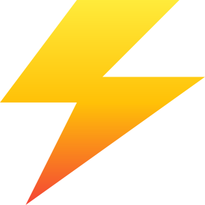
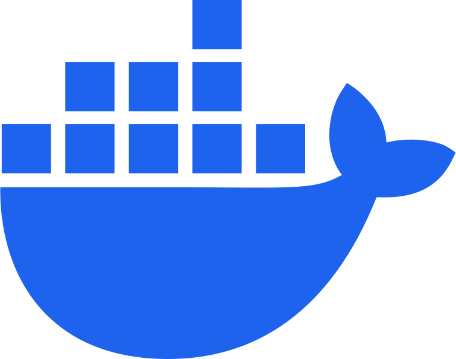
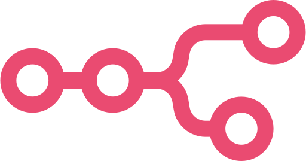
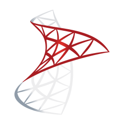
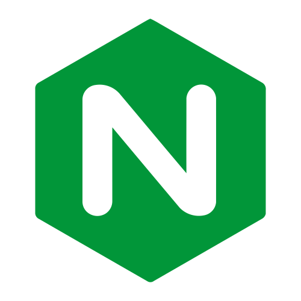
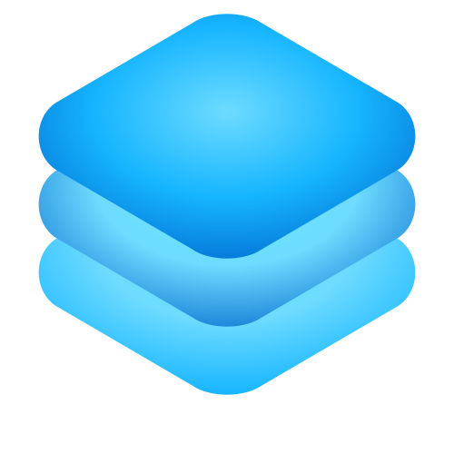

-
Actions
Every action counts
-
Improve
Focus on what matters
-

Challenges
Challenges as driving force
-
Journey
Path of constant evolution
-

Git
Version Control
-

ChatGPT
AI Assistant
-

Python
Programming Language
-

C#
Programming Language
-

GitHub
Version Control Platform
-

Docker
Containerization Platform
-
Playwright
Web Testing Framework
-

Power BI
Business Analytics Tool
-

Excel
Spreadsheet Software
-

HTML
Markup Language
-

CSS
Style Sheet Language
-
JavaScript
Programming Language
-
SVG
Image Format
-

n8n
Workflow Automation
-

Unity
Game Development Engine
-

Blender
3D Creation
-

MongoDB
Database Management
-

MSSQL
Database Management
-

PostgreSQL
Database Management
-

Nginx
Web Server
-

DevOps
Development & Operations
-

Full Stack
Front / Back Development
-
Devcamp
- Content Creation
- Python
- Responsive
A collection of projects to practice and enhance web development skills through hands-on exercises and real challenges.
-
Pressy
- UX Design
- Interactive
- Frontend
Front-end presentation tool with a book-like architecture, designed to create and display presentations in a visually appealing, interactive format.
-
Raw Group
- Web Design
- Responsive
- Frontend
A experimental web project for a personal training center, exploring responsive design, interactivity, and content management.
-
The Greatest Composer
- Game Design
- Storytelling
- Logic
- 3D
Step into the shoes of a police officer with a dream of becoming the greatest composer. Explore the world of music and creativity through puzzles and challenges.
-
Move The Sun
- Responsive
- Animation
- Interactive
Behold how the sky transforms as the sun reaches the horizon. Move the sun with your mouse and explore the scene to change the lighting and atmosphere.
Something went wrong while loading. See the Pen Move the Sun by Iker Karkokli (@iturriker) on CodePen.
-
Wave Shader
- WebGL
- GLSL
- Shader
Wave shader prototype with GLSL code. Explore the code and see how the shader works in real-time.
Something went wrong while loading. See the Pen Wave Shader by Iker Karkokli (@iturriker) on CodePen.